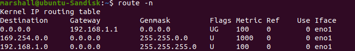
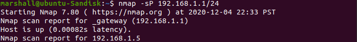

Nmap, or network mapper, is common tool for almost
anyone working with a network, wether they are maintaining, penetration
testing, or even hacking a network. It's free and open source which
makes it widely available and verifiable. It's also available across
Mac, Linux, and Windows so its even more versatile. GUI versions
are even available for those who are even uncomfortable using the
command line. It has several powerful commands to find out what ports
are open and local addressing for every connection on the
Nmap is easy to install on linux with the command:
`sudo [package manager] install -nmap -y`
You'll most likely need to install a command to find your IP Adress,
but that varies by distro. You'll also need your subnet mask and
default gateway.
A subnet mask of 255.255.255.0 is rather common. Using that, we know that
or mask length is/24.
Now we need our gateway. `route -n` works for most linux distros.

Now we know our gateway is 192.168.1.1.
Now run the command `nmap -s -P [gateway/mask length]`

This will return the IP address of every device connected to the network
You can run further commands to find out what ports are open.
I found a common one for my network was 7100. That port is commonly
used for streaming devices like smart tv's, Apple TV, Amazon Firestick, etc.
Having this information can be used to stem or start attacks on a network. Thus
it really is powerful and depends on the user for execution.
Nmap